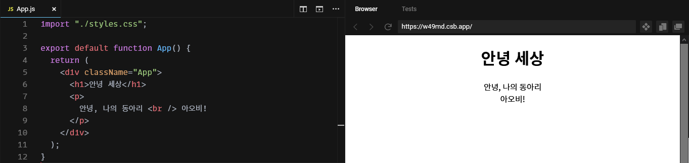

머리말
안녕하세요! 아오비는 컴퓨터 및 소프트웨어 전반에 대해 다루는 동아리예요.
컴퓨터가 할 수 있는 일이 다양한 만큼, 그냥 동아리 활동을 하자면 주제가 한도 끝도 없이 넓어질 수 있다고 생각해요. 여러분들도 다양한 주제에 관심이 많을 거라 생각하고요.
하지만, 너무 넓은 주제라면 운영에 어려움이 있고, 저희 학교에서 동아리 발표회를 하는 것과 배우는 입장에서 쉽고 재미있게 배울 수 있는 것을 고려하다보니 웹 프론트엔드 개발에 대해서만 다루게 되었어요.
이 책의 내용은 가능한 한 지도자 없이도 읽어보는 것을 통해 충분히 배우고, 다양한 과제 활동을 통해 여러분의 실력을 진일보시킬 수 있도록 꾸렸어요. 어려운 용어나 이론적 내용들은 최대한 뺐고, 복잡한 설정 없이도 시작할 수 있게 했어요. 프로그래밍을 여러분이 너무 어려워하지 않고, 끝까지 따라와 다양한 활동을 즐기실 수 있으면 좋겠네요.
마지막으로, 여러분들이 즐거운 동아리 생활을 하실 수 있다면 좋겠어요.
— 글쓴이 모두가
안녕 세상
생각 열기
여러분은 어떤 웹사이트에서 시간을 보내고 계신가요? 그건 커뮤니티 사이트일 수도 있고, 게임 사이트일 수도 있겠죠. 한 가지 확실한 것은, 웹사이트는 앱이나 프로그램처럼 번거롭게 설치할 필요도 없고 인터넷으로 접속만 하면 바로 뜨니 참으로 편리하다는 거에요. 심지어, 요즘은 일부 게임 런처나 메신저들도 웹을 바탕으로 만들어졌는데요. 이런 웹사이트를 만들려면 과연 어떤 게 필요할까요?
학습 목표
이 챕터에서는 다음과 같은 요소에 대해 배우며 웹사이트 개발의 기초를 다지도록 할게요.
- CodeSandbox 사용법
- JavaScript 기초
- React 기초
- 웹페이지 디자인
프로젝트를 시작하며
자, 그럼 웹사이트를 한 번 만들어보자구요. 그런데, 어디에서부터 시작해야 할까요? 다양한 방법이 있겠지만, 여기서는 여러분이 웹 프로젝트를 쉽게 만들고 공유할 수 있는 웹사이트를 하나를 소개시켜드릴게요.
CodeSandbox
CodeSandbox는 복잡한 설정 없이도 시작할 수 있게 미리 설정해둔 환경을 빌려줘요. 용량 제한 같은 게 있기는 하지만, 이 책에서 가르치는 과제를 수행하는 데에는 부족함 없이 쓸 수 있을 거예요.
들어가기
먼저 CodeSandbox에 접속해, 위쪽의 Sign In을 눌러요.

Sign in with Google을 눌러 자신의 계정으로 들어가요.

(첫 가입이라면) 이름을 설정해요.

다른 방법은 없나요?
이 책은 웹 프론트엔드 프로그래밍을 간단하게 다루기 때문에 CodeSandbox를 사용해요. 하지만, 기능에 다소 부족함이 있는 것은 사실이에요. 다른 환경을 원한다면 부록 A: 개발 환경에서 다양한 개발 환경에 대해 더 자세히 알아보세요.
첫 프로젝트 만들기
이제 진짜로 프로젝트를 만들어봐요! 대시보드에서 New Sandbox를 클릭해요.

팝업이 하나 뜨는데, Create Sandbox를 눌러주세요.

다양한 템플릿이 떠요. 우리는 그 중에서 React를 선택하기로 해요.

우와! 신기한 것들이 생겨났어요. 코드를 알아보기에 앞서, 도구부터 사용법을 익혀보자구요.

둘러보기
왼쪽 사이드바에서 첫번째 큐브 아이콘을 눌러봤어요. 1번은 샌드박스의 이름이고, 2번은 샌드박스를 더 편집할 수 있는지, 아니면 이 상태로 고정해둘 건지예요.

두번재 파일 아이콘을 눌러봤어요. 1번은 샌드박스에서 내가 관리하는 파일들이고, 2번은 남이 공유해둔 코드를 가져오는 기능이에요. 3번은 사이트 바깥에서 가져오는 추가 리소스인 스타일시트와 폰트예요.

세번째 검색 아이콘은 누가 봐도 샌드박스 내부에서 검색을 하는 것 같죠?
네번째 기어 아이콘은 몇몇 설정을 할 수 있는 모양입니다만, 저희는 추가 설정 없이 진행하기로 해요.
다섯번째 고양이 아이콘에서는 GitHub과 연동, 여섯번째 로켓 아이콘에서는 Vercel과 Netlify와 연동할 수 있게 해줘요. 하지만 저희는 CodeSandbox만을 이용하기로 했으니 넘기기로 해요. 만약 관심이 있다면 부록 B: 서비스를 살펴보세요.
마지막 일곱번째 사람 아이콘을 눌러봤어요. 1번은 현재 자신이 코딩하고 있는 걸 라이브로 공유할 수 있는 링크이고, 2번은 채팅을 허용할지 여부이고, 3번은 수정이 가능한 사람과 그렇지 않은 사람을 나누고, 관리할 수 있는 패널이에요.

둘러본 결과, 저희는 큐브, 파일, 사람 아이콘만 잘 사용하면 될 것 같아요.
일단, 안녕 세상
App.js를 봅시다.
6번 줄에 <h1>안녕, 세상.</h1>을, 7번 줄에는 <p>안녕, 나의 동아리 <br /> 아오비!</p>를 적어볼까요? 다 적었다면 아래 화면이 뜰 거예요. 파일 저장을 위해 Ctrl + S (혹은 위쪽 메뉴에서 File > Save)를 누르는 거, 잊지 마세요.

그런데, <h1>은 뭐고, <p>는 뭐고, 또 <br>은 뭘까요?
<h1>과 같이 <와 >로 감싼 걸 태그tag라고 불러요.
태그는 크게 세 종류로 나눌 수 있는데 <h1> 같이 /가 등장하지 않는 것을 여는 태그opening tag, </h1> 같이 < 다음에 /가 등장하는 것을 닫는 태그closing tag, <br /> 같이 > 전에 /가 등장하는 것을 스스로 닫는 태그self-closing tag라고 해요.
모든 태그는 열고 닫는 것으로 짝을 맞추어야 해요. 만약 제대로 하지 않는다면 오류가 뜰 거에요.
태그에 정보를 설정할 때는 여는 태그나 스스로 닫는 태그에 이름="문자열" 이나 이름={값}으로 속성property을 넘길 수 있어요. 가령 <h1>안녕, 세상</h1>에 title 속성을 넣는다면 <h1 title="안녕, 세상이에요!">안녕, 세상</h1>처럼 넣을 수 있죠.
그런데, <h1> 태그와 <p> 태그, 그리고 <br> 태그는 다 다른 이름이잖아요. 각각 무슨 의미일지 짐작이 가시나요? 아마 안 가실 거에요. 저도 그리 쉽게 이해가 가지는 않거든요. 하나하나 설명해드릴게요.
<h1>은 Heading Level 1를 줄인 것으로, 가장 높은 단계 제목이에요. 최대 6단계까지 제목이 있고 각각 <h1>, <h2>, <h3>, <h4>, <h5>, <h6> 이에요.
<p>는 Paragraph를 줄인 것으로, 문장을 나타낼 때 사용해요.
<br>은 Line Breaking을 줄인 것으로, (특히 시의 구절 같은 곳에서) 줄을 나눌 때 사용해요.
이 외에도 다양한 태그들이 있어요. 또, React는 컴포넌트를 만들어서 확장해나갈 수도 있기 때문에 더 다양한 태그들의 사용을 볼 수 있어요. 하지만 걱정하지 마세요. 여러분은 이런 걸 외울 필요 없어요! 인터넷은 우리의 친구이기 때문이죠. 검색이나 질문을 잘 하는 방법에 대해서는 부록 C: 공통 컴퓨터 지식을 살펴보세요. 자주 쓰이는 태그들에 대해 살펴보고 싶다면 부록 E: 자주 쓰이는 태그들를 살펴보세요.
JavaScript와 React
JavaScript는 웹페이지를 만들기 위해서는 필수라고 볼 수 있는 언어예요. 프로젝트를 되돌아보면서 JavaScript, 그리고 React와 친숙해져봐요.
App.js 살펴보기
1번 줄
./styles.css를 가져와 적용해요. ./styles.css와 같은 경로가 정확히 어디를 가리키는지에 대해서는 부록 C: 공통 컴퓨터 지식를 살펴보세요.
CSS는 앞서 설명한 태그들로 골격을 잡아둔 웹사이트에 색이나 테두리같은 걸 꾸며주는 역할을 해요. 하지만 아무 태그나 꾸미면 안되니까 원하는 태그만 꾸미기 위해서 선택자selector를 통해 꾸밀 대상을 선택하지요.
import가 뭔지는 아래에 적어둘테니 쭉 읽어보세요.
3번 줄
아무 것도 받지 않는 App이라는 함수를 만들어요.
함수는 0개 이상의 값 묶음을 받아서 하나의 값을 돌려주는 코드 뭉치에요. 여기서 특히 하나의 속성 객체를 받고 태그를 돌려주는 App 같은 함수를 컴포넌트라고 부르는데 (실제로는 조건이 더 있지만 나중에 알아볼게요!), 이런 컴포넌트들은 <h1> 같은 태그 쓰듯이 쓸 수 있어요.
export default가 뭔지는 아래에 적어둘테니 쭉 읽어보세요.
4번 줄
이 함수, App의 실행 결과로 괄호 안의 값을 보내요. 컴포넌트를 만들다보면 태그가 길어지는 일이 자주 발생하기 때문에 보통 return 뒤에 괄호가 오기 쉽지만 괄호는 선택이에요! 이 안에 있는 것들을 보낸다는 걸 잘 보여주기 위해 쓰는 거에요.
5번 줄 ~ 10번 줄
앞서 설명했듯이, 태그를 통해 웹페이지 구조를 나타내요.
모듈
원래 컴퓨터는 그냥 계산기였지만 컴퓨터가 점점 더 복잡해지고, 커져만 가서 더 이상 파일 한두개로 관리할 수 없게 됐어요.
그래서 사람들은 파일을 나누고, 내가 이 파일의 어디를 쓴다라는 걸 나타내기 위해서 모듈이라는 체계를 만들었어요. export를 통해 이 파일이 어떠어떠한 기능을 내보여서 쓸 수 있게 해준다고 하면, import를 통해서 그 기능을 가져다가 쓰는 거지요. 여기서 특히 export default로 내보낸 것은 default 라는 이름으로 내보내지는데, import A from 'B';를 쓸 때 가져와져요.
styles.css 살펴보기

.App을 통해 className이 "App"인 것들을 선택해서, 폰트 패밀리font-family를 브라우저 기본 산세리프 폰트sans-serif로 설정해요. 텍스트 정렬text-align은 가운데center로 하네요.
이 책에서 CSS는 필요한 경우가 아니라면 추가적으로 언급하지 않을 생각이에요. 더 예쁜 웹사이트를 만들고 싶다면 부록 D: 자주 쓰이는 스타일들을 살펴보세요.
살펴보지 않을 파일들
index.js
index.js는 저희 웹사이트의 진입점에 해당해요. 여기선 웹사이트를 구성하는 기본 요소를 설정해주는 곳이라 이 책에서는 건드리지 않을 생각이에요.
package.json
package.json에는 의존성과 개발자에 대한 정보 따위가 들어가는데, 저희는 이걸 수정할 동기가 없거니와 CodeSandbox가 의존성 검색 및 추가를 지원하므로 직접 건드리지 않을 생각이에요.
public/index.html
index.html은 웹사이트의 기반이 되는 HTML 파일이에요. 여기를 건들지 않으면 신경쓰지 않고 기본 템플릿으로 만든 티가 나지만 그런 게 별로 중요하다고 생각하지는 않기 때문에 이 책에서 다루지는 않을 거에요.
심화학습: 자기소개하기
앞에서 몇 줄의 수정으로 컨텐츠를 변경해봤어요. 하지만 다 똑같은 안녕 세상이면 심심하니까, 내 자기소개를 한 번 넣어봅시다.
App.js 수정하기
아마 순서대로 따라오셨다면 return 부터 둥근 괄호의 끝까지가 4번에서 9번 줄일 거에요. 이 부분을 다 지우고 아래 코드로 채워봅시다. {과 }로 둘러진 부분은 직접 채워보세요.
return (
<div>
<h1>자기소개</h1>
<p>저는 {학교이름} {학년}학년 {반}반 {번호}번 <b>{이름}</b>입니다.</p>
<p>제가 좋아하는 것은 <b>{좋아하는 것}</b>입니다.</p>
<p>앞으로도 잘 부탁드립니다!</p>
</div>
);
그러면 아마 아래 예시에서처럼 자기소개가 나올 거에요! 설마 괄호 쳐진 부분을 하나도 안 바꾸지는 않았겠죠?
부록 A: 개발 환경
세상에는 각양각색의 사람이 있고, 그러한 사람들이 구축하는 개발 환경에 모두 같다고 말할 수는 없을 거예요. 여기서는 그 중에 글쓴이들이 추천하는 개발 환경에 대해 적어뒀어요.
코드 편집 도구
JetBrains IDE
JetBrains는 소프트웨어 개발자를 위한 프로그램 개발에 뼈가 굵은 회사예요. 누구나 자유롭게 사용할 수 있는 IntelliJ IDEA Community Edition과 PyCharm Community를 비롯해 웹 개발에 특화된 WebStorm, C# 개발에 특화된 Rider 등 IntelliJ 바탕 통합 개발 환경을 판매하고 있어요.
Visual Studio Code
Visual Studio Code는 Microsoft에서 만든 코드 편집기예요. 다양한 환경에 대응할 수 있는 간단한 코드 편집기이며, 특히 웹 분야에 강점을 보이죠. 확장Extension을 통해 편집기의 기능을 더 넓힐 수 있으며, 통합 개발 환경에 가까운 수준까지 만들어낼 수도 있어요.
Visual Studio
Visual Studio는 Microsoft에서 만든 통합 개발 환경이에요. C++, C# 등의 언어릂 편집하는 것에 특히 강점이 있으며, Unity 개발 등에 널리 쓰이고 있어요.
Notepad++
Notepad++는 단순한 코드 편집기예요. 기능이 많이 부족하지만 가볍기 때문에 간단한 코드 편집이나 편집 없이 코드를 읽기만 하는 경우에 주로 써요.
기타 도구
Git
Git은 분산형 버전 관리 시스템으로, 코드의 협업을 돕는 도구예요. 여러 사용자 사이의 코드가 동기화되도록 돕고, 편집에 충돌이 있을 경우 합치는 것이나, 어떤 코드를 누가 언제 어떻게 편집했는지 남기는 것, 가지Branch를 나누어 기능 추가나 버그 수정이 원본 코드와는 별개로 작업될 수 있도록 하는 등의 이점을 갖고 있어요.
부록 B: 서비스
세상에는 소프트웨어 개발자를 위한 서비스들이 많이 있죠. 이 부록에서는 다양한 서비스들이 어떤 역할을 하는지 적어뒀어요.
GitHub
GitHub는 Microsoft가 인수한 Git 원격 저장소 사이트로, 단순히 코드를 Git으로 관리하는 기능뿐만이 아니라 이슈의 등록, 프로젝트의 관리, 정적 페이지 호스팅 등 다양한 기능을 수행하고 있어요. 무료로 사용하는 것에 기능 제한이 없지는 않으나 상당히 적은 편에 속해요. Git에 대해서는 부록 A: 개발 환경/기타 도구/Git을 살펴보세요.
Vercel
TODO
Netlify
TODO
부록 C: 공통 컴퓨터 지식
이 부록에서는 컴퓨터에 관한 공통된 지식들에 대해 적어뒀어요.
경로
경로는 파일이나 디렉터리가 저장되는 파일 시스템 속 고유한 위치에요.
절대 경로
절대 경로는 경로를 처음부터 끝까지 다 나타낸 거에요. 어디서 보든 절대적으로 한 곳만 가리켜요.
상대 경로
상대 경로는 현재 파일의 경로에 상대적으로 경로를 나타낸 거에요. .은 현재 경로를 가리키고 ..은 현재 경로보다 한 단계 위를 가리켜요. /a/b/c/에서 ../../d를 풀면 a/d가 돼요.
지식 얻기
검색
검색을 잘 하는 것은 누구에게나 중요하지만 소프트웨어 개발자들에게는 특히 중요하다고 할 수 있어요. 이 단락에서는 검색을 잘 하는 방법에 대해 적어두었어요.
공신력 있는 사이트를 이용하세요
Mozilla Developer Network (https://developer.mozilla.org)나 StackOverflow (https://stackoverflow.com/)는 양질의 자료가 모여 있는 웹/소프트웨어 개발 자료의 보고라고 할 수 있어요. 이러한 공신력 있는 사이트들에서 자료를 얻으면 보다 양질의 자료를 얻을 수 있어요.
구글에 영어로 검색하세요
영어는 세계 공용어의 지위를 갖고 있어요. 또, 구글은 다양한 곳에서 자료를 모아주죠. 일부 분야를 제외하고는, 한국어로 네이버에서 검색할 때보다 영어로 구글에서 검색할 때 더 자료가 많이 나오니까 되도록 영어랑, 그리고 구글이랑 친해지는 편이 좋아요.
핵심을 잘 추출하세요
검색에 필요 없는 곁가지는 쳐내야 해요. 문장으로 구구절절 쓴다고 해서 기계가 제 사연을 알아주지는 않으니까요. 가령 "로그인 버튼에 마우스를 올리면 이 파란 버튼의 배경 색을 한 10% 정도 밝게 만들고 싶은데 어떻게 해야할까?"라는 질문을 해결하기 위해서는 "버튼에 마우스를 올리면 배경색을 밝게 만든다brighten background color on button hover"라는 핵심만을 뽑아내야 해요.
질문
나보다 더 잘 아는 사람에게 질문을 던지는 것은 결코 부끄러운 일이 아니에요. 하지만, 질문을 어떻게 던지느냐에 따라서 내게 얼마나 도움이 되는 답을 받느냐가 갈리겠죠. 이 단락에서는 어떻게 해야 질문을 잘 할 수 있는지 알아봐요.
물어봐도 되냐고 물어보지 마세요
그것부터가 이미 질문이에요. 그냥 바로 질문하세요. 그런 질문을 생략하고 원래 질문으로 들어가는 것이 서로에게 더 유익해요. 질문의 길이가 길다면 혹시 시간 괜찮으신가요 같은 질문을, 심화 지식이 필요하다면 어떠한 것에 대해 여쭤보려는데 괜찮으신가요 같은 질문을 앞에 붙일 수는 있겠네요.
괜히 꼬지 말고 원래 필요한 것을 질문하세요
A를 하려면 B가 필요한데 B를 얻으려면 C를 해야겠지라면서 C를 질문하지 마세요. A를 바로 물어보세요. 내가 알지 못하는 다른 방법이 있을 수도 있어요. 한 가지 확실한 건, 원래 목적에 가까운 질문일수록 좋다는 거에요.
최대한 많은 정보를 주세요
당신이 별로 중요하지 않다고 생각하고 알려주지 않은 정보가 사건 해결의 열쇠일 수 있어요. 밑도 끝도 없이 오류가 떴어요! 보다는 제가 이런 코드를 짜서 켜봤는데 이러한 빨간 글씨가 뜨면서 오류가 납니다 라고 하면 대답하는 입장에서 더 대답하기 좋겠죠?
부록 D: 자주 쓰이는 스타일들
이 부록에서는 웹 페이지를 꾸미기 위해 자주 쓰이는 스타일들에 대해서 적어뒀어요.
부록 E: 자주 쓰이는 태그들
TODO